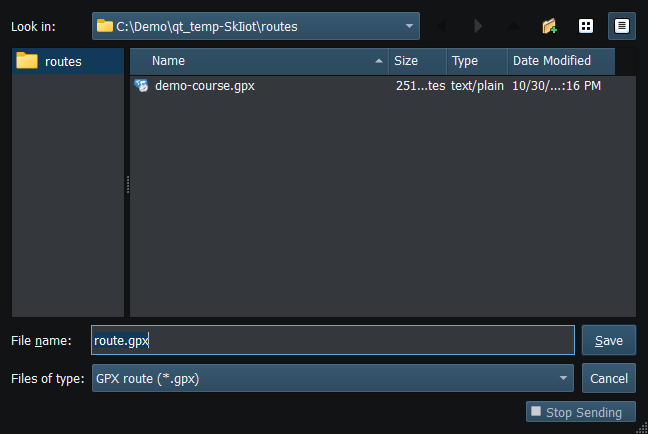

Export Route… writes an operator-selected validated snapshot to GPX or KML. It is available for a valid selected file or complete chartplotter route. It is independent of Sending and does not activate Autopilot.
The selected source file cannot be overwritten by its own export. Symlink/canonical-path checks and destination-change checks protect the inspected destination; failed atomic replacement leaves the previous destination in place. Cancel makes no file or route-state change. A non-writable directory is an error, not permission to save elsewhere silently.
| Data | Export contract |
|---|---|
| Route/waypoint names | UTF-8 and XML escaping; duplicate names remain allowed |
| Waypoint order | GPX ordered rtept elements; KML ordered geometry with matching named waypoint points |
| Coordinates | Validated geographic bounds and practical maximum numeric precision; KML uses longitude before latitude |
| Service identity | NMEA2000 NAME, source address, database and sparse waypoint identifiers do not become portable service identity |
| Absent metadata | No invented altitude, arrival radius, speed profile or proprietary extensions |
Keep the original route. After importing the exported file into another application, compare waypoint order and geometry before using it.
If the save dialog is hard to use, check the folder, file type and destination permissions. Keep your preferences; report the version, platform and steps that led to the problem.

Figure 78. Choose a destination name and GPX or KML format for the exported route. Click to enlarge.
Route Overview · GPX/KML Import · Selecting Chartplotter Routes · Route Requests and Authorization · Navigation Measurements · Connection Troubleshooting · Enable, Dispatch and Sending · Engineering Units